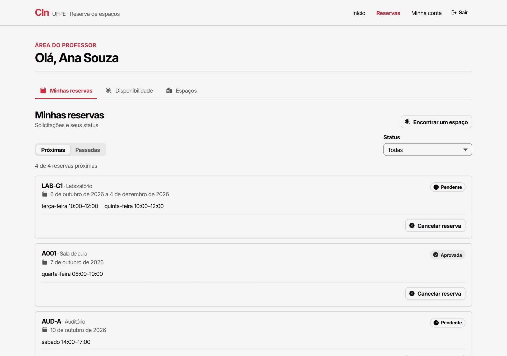
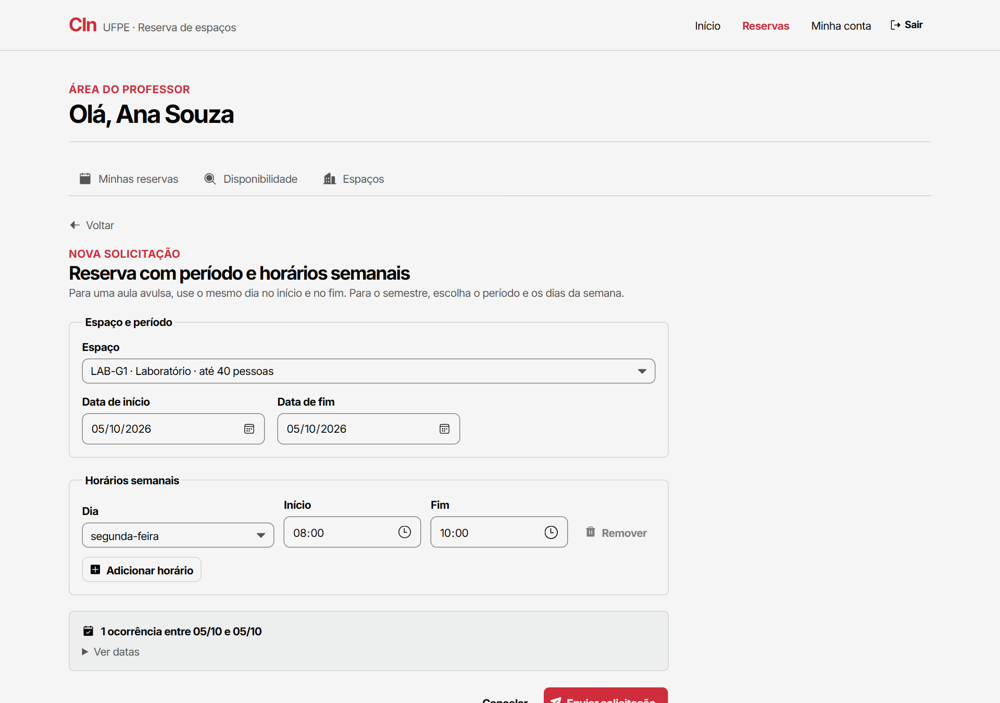
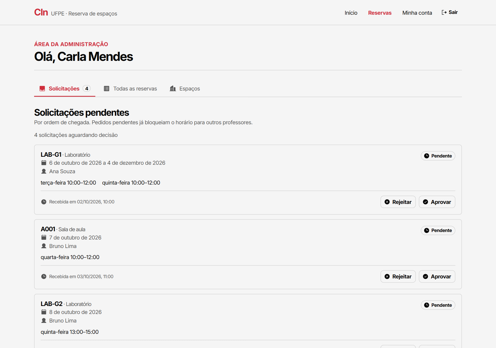
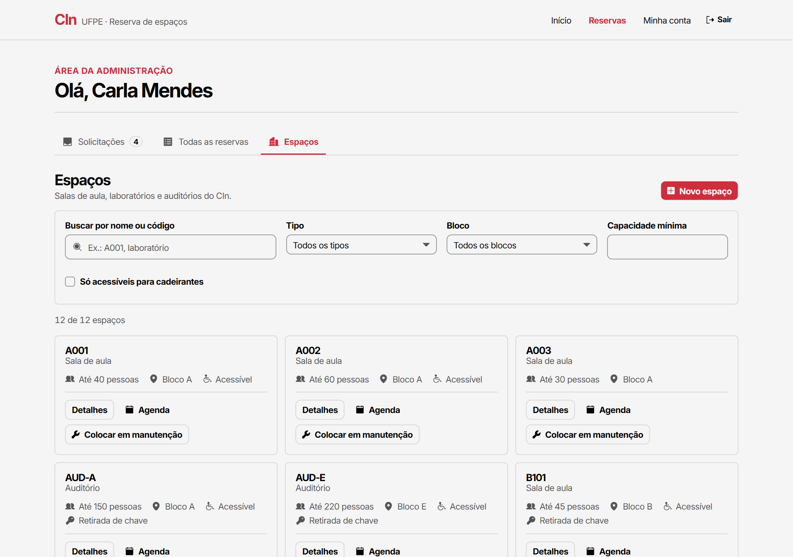
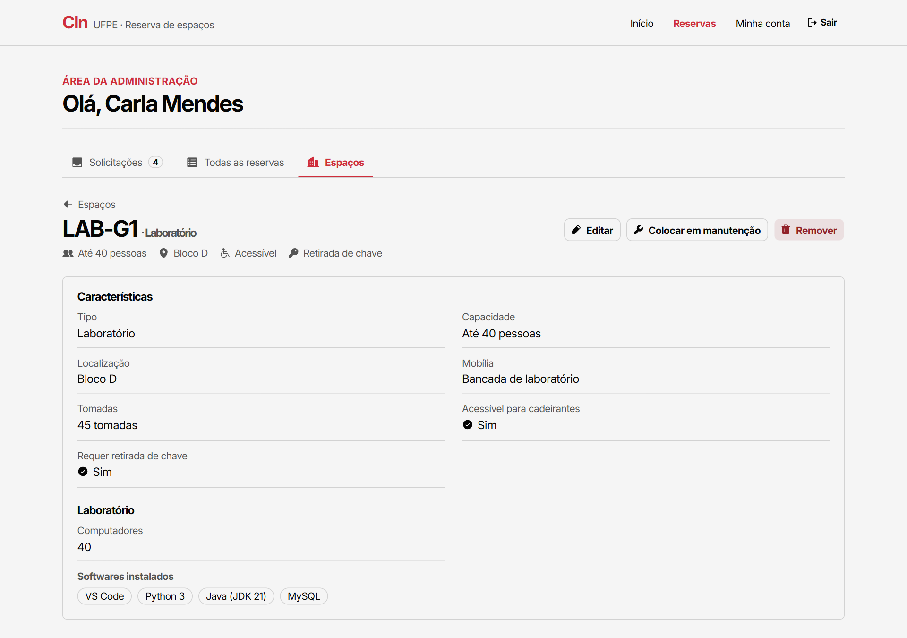
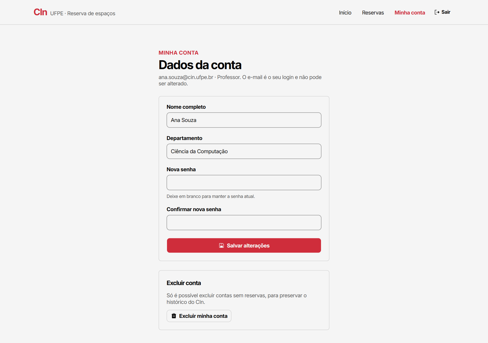

Professor
- Consulta espaços e a disponibilidade por data e horário
- Pede reservas avulsas ou recorrentes no semestre
- Vê os conflitos exatos quando um horário está ocupado
- Acompanha e cancela as próprias reservas
- Edita ou exclui a própria conta
CIN0135 · Estruturas de Dados Orientadas a Objetos · 2026.2
Um sistema de informação em C++ para as salas de aula, laboratórios e auditórios do Centro de Informática da UFPE: professores consultam a disponibilidade e pedem reservas recorrentes; a administração mantém o cadastro de espaços e decide os pedidos.
Cada perfil enxerga só o que lhe cabe. Espaços e usuários têm CRUD completo, persistido em SQLite; reservas seguem um ciclo de vida (pendente → aprovada, rejeitada ou cancelada).
A interface em React é o cliente principal da API em C++. As capturas usam os dados de demonstração do sistema.






O backend foi modelado em classes. A explicação completa, com trechos de código, está na seção 4 do relatório.
| Conceito | Onde aparece |
|---|---|
| Encapsulamento |
Atributos private em Reserva e Horario;
o hash de senha nunca sai de Usuario.
|
| Herança |
Espaco → SalaAula, Laboratorio,
Auditorio; Usuario → Professor,
Administrador.
|
| Classes abstratas |
Espaco e Usuario têm métodos virtuais puros;
IRepositorio<T> é uma interface.
|
| Polimorfismo |
validarPermissaoReserva decide por tipo de usuário;
obterDescricaoDetalhada e tipo() por tipo de espaço.
|
| Sobrecarga e templates |
toString para cada enum class; um único
IRepositorio<T> para três entidades.
|
| Ponteiros e referências |
std::shared_ptr nas associações, ponteiros não proprietários para a
conexão SQLite, referências const nos getters.
|
| Padrões de projeto |
Repository, Facade (SistemaDeReservas), Factory
(mapearLinha) e RAII na trava do banco.
|
classDiagram
direction TB
class Usuario {
<>
#int id
#string nome
#string email
#string senhaHash
+fazerLogin(email, senha) bool
+gerarHashSenha(senha) string$
+validarPermissaoReserva(Espaco) bool*
+tipo() string*
}
class Professor {
-string departamento
+validarPermissaoReserva(Espaco) bool
+tipo() string
+solicitarReserva(SistemaDeReservas, Reserva) bool
+cancelarReserva(SistemaDeReservas, id, motivo) bool
}
class Administrador {
+validarPermissaoReserva(Espaco) bool
+tipo() string
+aprovarReserva(SistemaDeReservas, id) bool
+rejeitarReserva(SistemaDeReservas, id, motivo) bool
}
Usuario <|-- Professor
Usuario <|-- Administrador
class Espaco {
<>
#int id
#string identificacao
#int capacidade
#BlocoCIn bloco
#bool emManutencao
+obterDescricaoDetalhada() string*
+tipo() string*
}
class SalaAula {
-TipoQuadro tipoQuadro
-bool possuiProjetor
}
class Laboratorio {
-int qtdComputadores
-vector~string~ softwaresInstalados
}
class Auditorio {
-bool equipamentoSom
-bool cabineTraducao
}
Espaco <|-- SalaAula
Espaco <|-- Laboratorio
Espaco <|-- Auditorio
class Reserva {
-int id
-string dataInicio
-string dataFim
-StatusReserva status
+aprovar()
+rejeitar()
+cancelar()
}
class Horario {
-DiaSemana diaSemana
-int horaInicioMin
-int horaFimMin
+conflitaCom(Horario) bool
}
Reserva --> "1" Professor : solicitante
Reserva --> "1" Espaco : espaco
Reserva *-- "1..*" Horario : horarios
class IRepositorio~T~ {
<>
+salvar(T)*
+buscar(id) T*
+atualizar(T)*
+remover(id)*
+listarTodos() vector~T~*
}
class RepositorioEspaco
class RepositorioReserva
class RepositorioUsuario
IRepositorio <|.. RepositorioEspaco : T = Espaco
IRepositorio <|.. RepositorioReserva : T = Reserva
IRepositorio <|.. RepositorioUsuario : T = Usuario
RepositorioReserva --> RepositorioEspaco : usa
class SistemaDeReservas {
+processarNovaReserva(Reserva) bool
+verificarDisponibilidade(Espaco, Horario, data) bool
+autenticarUsuario(email, senha) Usuario
+aprovarReserva(id) bool
+cancelarReserva(id, idProfessor) bool
+atualizarUsuario(...) bool
+removerUsuario(id) ResultadoRemocaoUsuario
}
SistemaDeReservas *-- RepositorioEspaco
SistemaDeReservas *-- RepositorioReserva
SistemaDeReservas *-- RepositorioUsuario
Três camadas no backend, uma API REST no meio e a interface web na ponta.
Servidor Crow com as rotas REST,
SistemaDeReservas com as regras e repositórios com prepared statements
no SQLite. Senhas com PBKDF2 (OpenSSL).
Tabelas usuarios, espacos, reservas e
reserva_horarios. O catálogo oficial de 77 espaços do CIn é importado
na primeira execução.
React + TypeScript + Vite, seguindo a identidade visual do CIn. Fala com o backend por JSON; também roda com uma API simulada para demonstração.
Demonstração das funcionalidades e dos conceitos de orientação a objetos usados no código.
Projeto prático da disciplina CIN0135, ministrada pelo prof. Francisco Simões no CIn-UFPE.
Desenvolvimento Backend em C++, modelagem do banco SQLite e documentação.
Desenvolvimento Frontend em React e integração de telas com a API REST.
Estruturas de Dados Orientadas a Objetos e regras de disponibilidade.
Elaboração do relatório técnico e produção do vídeo de demonstração.